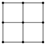
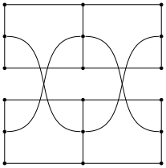

Number Space
This site requires a wider window, and also uses the keyboard and mouse.
Instructions
A single cell is filled in with orange when the game is paused. Moving the mouse over this highlighted cell will resume navigation. Moving the mouse away from the Sudoku board will pause the game. To fill in the puzzle, navigate to a white cell and press a number key to insert a digit. At this point the row, column, and 3x3 block that contain the selected cell will be visible. In a solved puzzle each of these three areas will contain all of the digits 1-9. Press "backspace", "delete", or "0" to clear a cell. Press "escape" to return to the starting position. Click on the thumbnail images above to switch between puzzles.
Explanation
When using the mouse to navigate the board, it may look like the numbers are changing. They are not changing, but coming into and out of view. Retracing the mouse's movement will return to the previous views. All of the puzzles here are displayed in the same way. The visible part of the game board is every location that can be reached via a straight line path from the current mouse position.
Puzzle One
The first of the puzzles listed above contains exactly 27 cells. It can be alternatively drawn like this:
There are only three columns, and they pass through the orange portal. The three rows pass through the blue portal.
Puzzle Two
The idea with all of these puzzles is to play normal Sudoku on a differently shaped board. Consider this network with nine nodes:
The nodes represent the nine 3x3 blocks of a regular Sudoku board. The network connections give information about how the blocks are positioned next to each other. Here is an analogous network for the second puzzle, which has eighteen blocks:
It is almost like two regular boards that have been linked together.